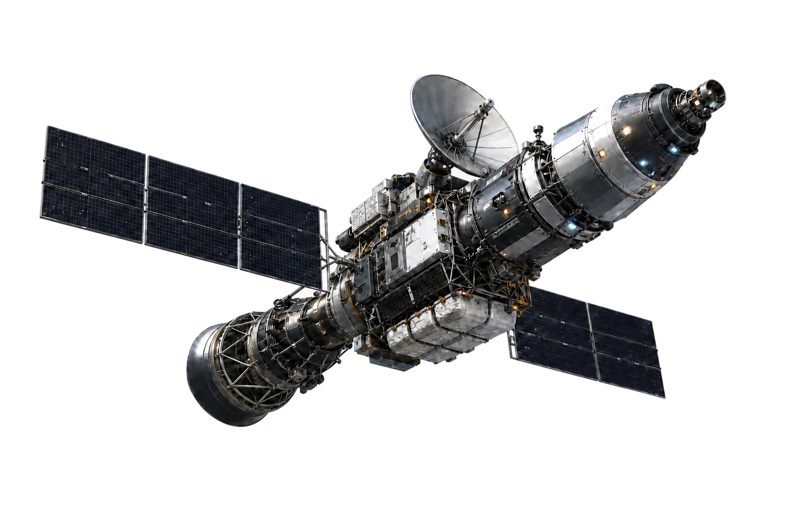

사용자의 변경 질문을 그대로 접수
사용자
“SAMPLE_APP의 Int2 상한 조건을 바꾸려는데,
어떤 코드와 시험이 영향받아?”
사용자는 바꾸려는 내용과 확인할 영향을 한 문장으로 묻는다.
cFS 변경 영향 후보를 정확한 근거와 함께 좁혀주는 Human Engineer 검토 지원 도구

시스템 분해
영향 전파
발행자
전파 경로
구독자
사람의 변경 검토
LLM을 활용한다면...?
“SAMPLE_APP의 Int2 상한 조건을 바꾸려는데,
어떤 코드와 시험이 영향받아?”
사용자는 바꾸려는 내용과 확인할 영향을 한 문장으로 묻는다.
시스템은 질문에서 바꿀 대상, 핵심 식별자, 변경 내용을 구조화한다.
같은 단어가 있는 자료와 뜻이 비슷한 자료를 함께 찾아 빠뜨릴 가능성을 줄인다.
찾은 자료와 직접 연결된 코드, 시험, 설정까지 따라가 확인 범위를 넓힌다.
겹치거나 관련이 적은 항목을 걸러 사람이 확인할 10개만 남긴다.
남은 항목마다 바뀔 수 있는 코드와 다시 확인할 시험을 따로 정리한다.
if (TblDataPtr->Int1 > SAMPLE_APP_PLATFORM_TBL_ELEMENT_1_MAX)현재 Int1만 검사하는 구현을 찾아, Int2 상한 검사를 추가할 지점을 확인한다.
다른 에이전트가 같은 근거로 다시 확인해 근거 없는 판단을 걸러낸다.
XART-03 · 2 verified claims · ADDITIONAL VERIFIED 0
사용자는 확인할 코드와 시험, 그 근거를 한 번에 받아 최종 결정을 내린다.
승인·거부하지 않음 자동 수정하지 않음 무영향을 보증하지 않음 최종 판단은 Human Engineer
실제 영향 항목이 처음 모은 40개 후보 안에 들어오는지 확인한다.
직접 연결된 영향 항목이 확장된 200개 후보 안에 포함되는지 확인한다.
실제 영향 항목이 사람이 검토할 최종 10개 안에 남는지 확인한다.
찾아낸 영향이 정확한 원문 근거와 함께 제시되는지 확인한다.
영향이 없어야 하는 사례에 잘못된 경고가 생기지 않는지 확인한다.